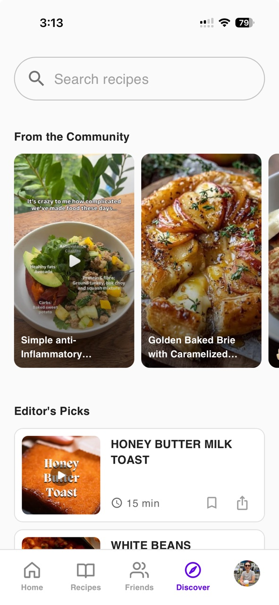
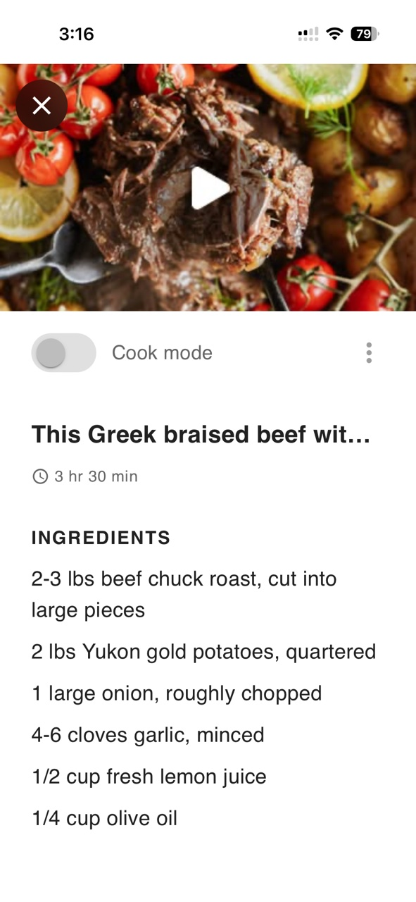
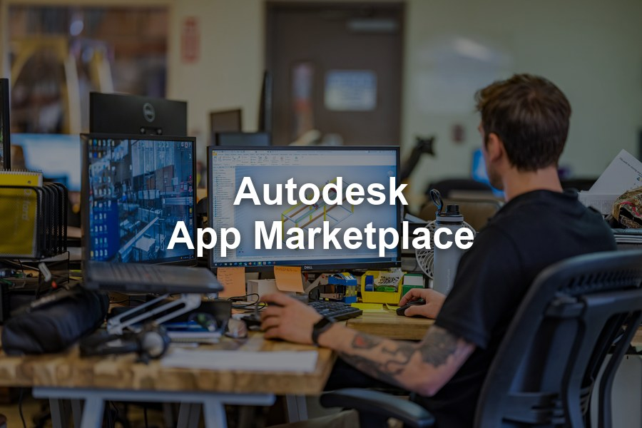
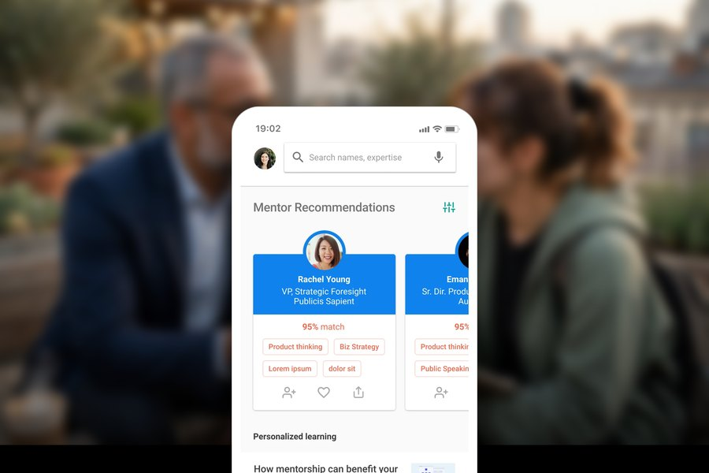
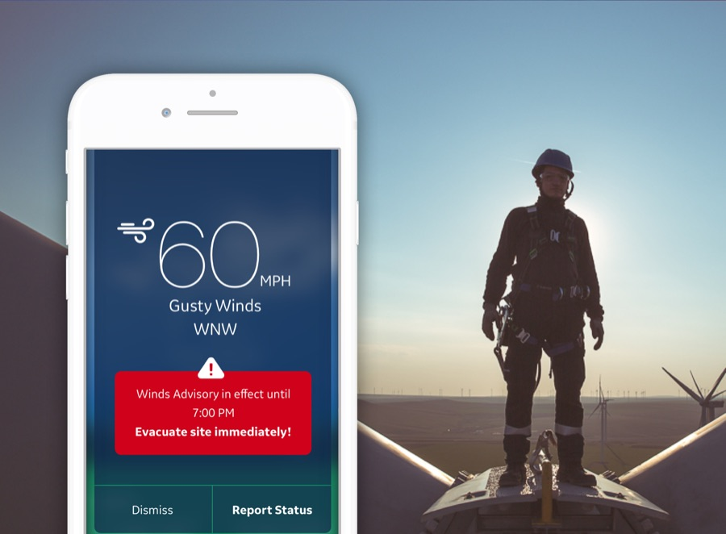
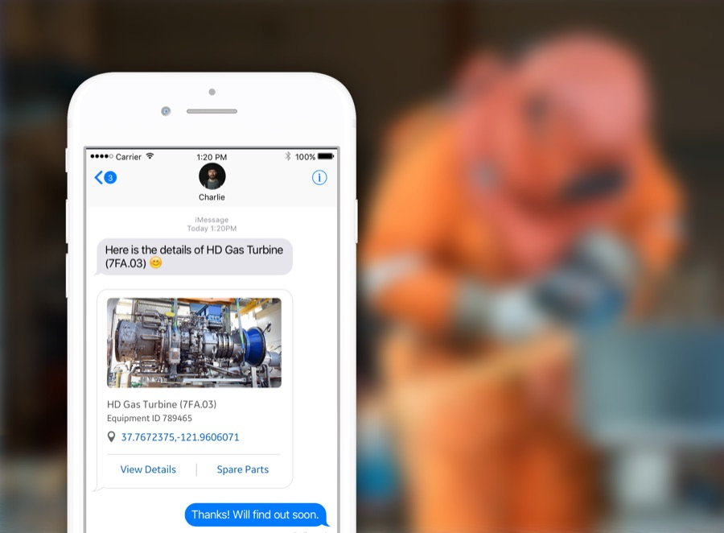
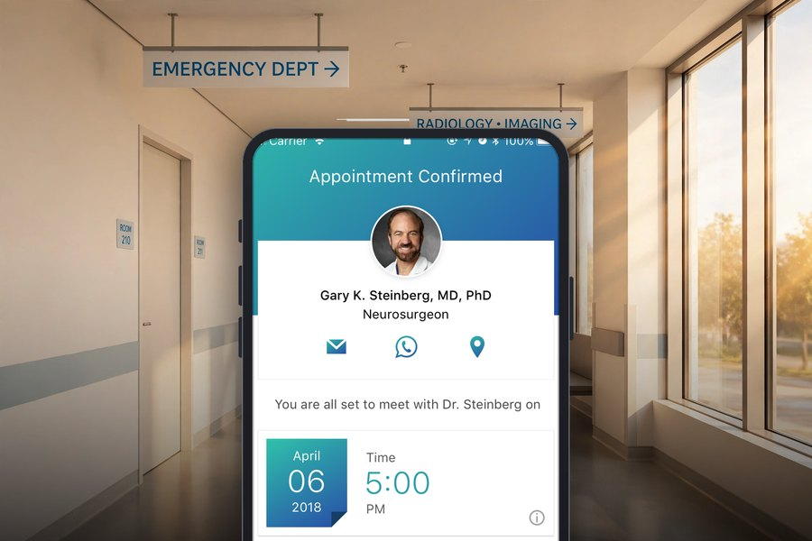
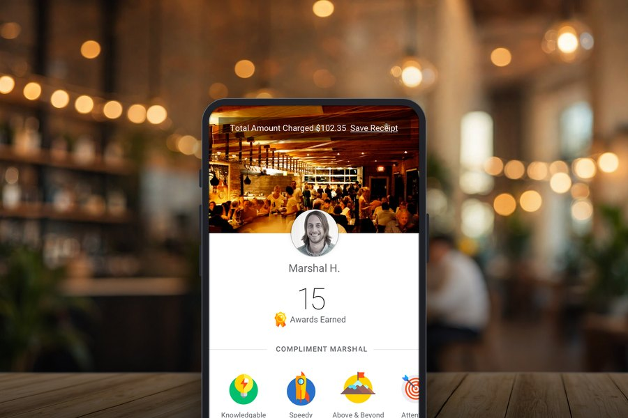
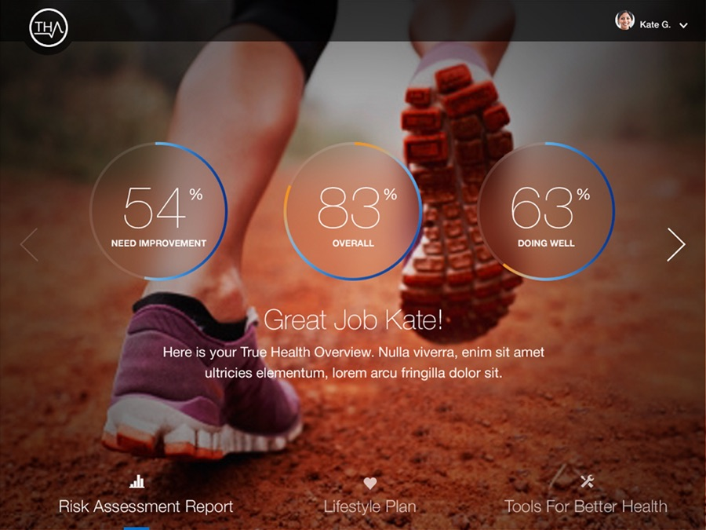
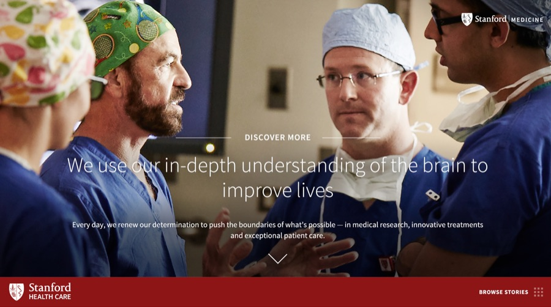

I design the systems that products are built on.
Blending platform thinking with user-centered strategy to build scalable ecosystems — ones that serve both the business and the developers who build on them.
Featured Case Study
01 — FeaturedReciFriend
A social recipe app for home cooks, not influencers. Save any recipe from Instagram, TikTok, or the web in one tap, then share it with the people you actually cook for. Designed, built, and shipped solo.


Selected Work
02 — Portfolio







How I Work
03 — ProcessMy end-to-end process runs on two tracks, discovery and delivery. Ongoing customer research feeds every phase of both.
Discovery
Research Baseline data, then Customer Council
- 01
Blueprinting
I facilitate cross-org workshops to identify overlapping initiatives, user needs, and priorities.
- 02
Vision Development
I develop a north star vision that addresses user needs and business goals, and outline use-case scenarios that make it concrete.
- 03
Stakeholder Alignment
I share the vision, run an alignment survey, and work with subject matter experts to identify the capabilities that shape the product roadmap.
- 04
Concept Testing
I validate the use-case scenarios through developer conferences, the Customer Council, and internal subject matter experts.
- 05
Roadmap Planning
With my product manager, I break the vision down into short-term and long-term roadmaps.
Delivery
Research Customer Council, continuing through release
- 01
Release Planning
I help break the roadmap down into delivery milestones and create the epics.
- 02
Design Solution
I turn concepts into high-fidelity mockups and prototypes based on discovery insights, then review them with the engineering lead.
- 03
Usability Testing
I test the interactive prototype with customers and iterate on the design based on their feedback.
- 04
Engineering Handoff
I review the design with the engineering team and finalize it for handoff.
- 05
Success Metrics
After release, I define success metrics with the product manager and researcher, set up data instrumentation, and monitor the results.
About
04 — ProfileI’m passionate about designing impactful products where vision drives strategy. I blend platform thinking with user-centered product strategy to build scalable ecosystems that meet both business and developer needs.
At Autodesk, I lead efforts to improve the end-to-end developer experience — helping external developers build with our APIs and distribute their solutions on the Autodesk App Store.
With expertise across discovery and delivery, I thrive in cross-functional teams that value insight, collaboration, and continuous learning.
- 01 Product Design
- 02 Product Thinking
- 03 Product Strategy
- 04 Systems Thinking
- 05 UX & Research
- 06 Interaction Design
Building a platform, product, or system worth designing well?
To request my most recent work or start a conversation, reach out on LinkedIn — I’d love to hear from you.
Connect on LinkedIn →